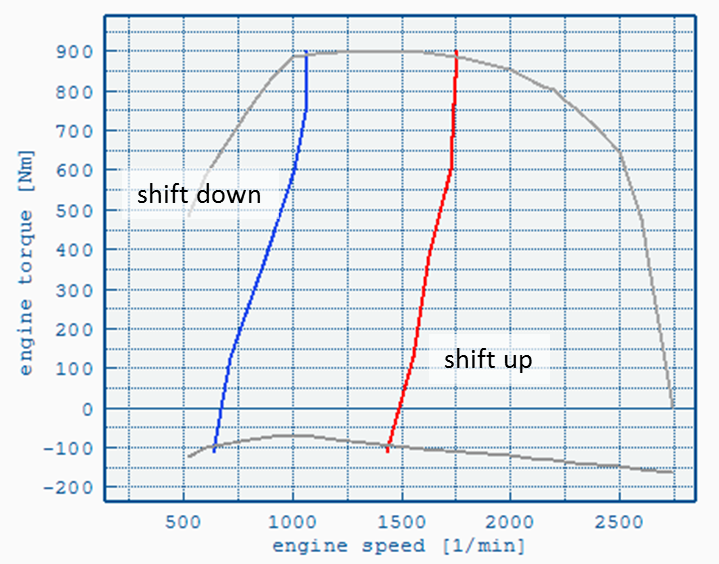

Defines up- and down-shift curves. See
Gear Shift Model for details.

File Format
The file uses the
VECTO CSV format.
Format:
- Three columns
- One header line
- At least two lines with numeric values (below file header)
Columns:
| Engine
Torque [Nm] |
Downshift
rpm [1/min] |
Upshift
rpm [1/min] |
| ... |
... |
... |
| ... |
... |
... |